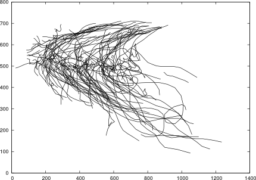
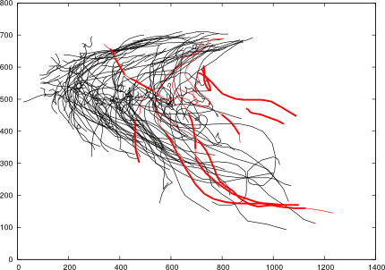

Overview
This is an open-source library to find outlier trajectories in a dataset. This library is based on the work of Jae-Gil Lee and others.
What are trajectories?
Trajectories are everywhere - pedestrians, vehicles, hurricanes, animals, and many other objects produce trajectories of position information that change over time. Trajectory mining seeks to identify patterns and interesting features in trajectory datasets. Trajectory mining techniques can be used to categorize paths of hurricanes, identify suspicious individuals in a park, or predict the destination of a car in a city.
Background and motivations
This is a library for trajectory outlier detection that uses the algorithm presented by Jae-Gil Lee and others in their paper Trajectory Outlier Detection: A Partition-and-Detect Framework [1]. Outlier trajectories have paths that are not similar to other trajectories in the dataset.
This code is based heavily on the source code made available on Jae-Gil Lee's webpage. The code on on his website is a complete implementation of their algorithm, but like most research prototypes it includes little documentation and is unusable as a general-purpose library. Additionally, it was written with Microsoft Visual Studio - it uses Windows-specific visualization and proprietary Microsoft C++ structures. Therefore, the goal of this project was to take that implementation and rewrite it as a cross-platform library.
Trajectory Plotting
This graphic of the trajectories in a hurricane dataset is an example of the plotting functionality of the library. Plots are generated with Gnuplot, a generic cross-platform plotting library.

Outlier Plotting
After finding outliers in the hurricane dataset we can plot outlier trajectories (red) and outlying parititions (thick).

Basic Algorithm Overview
Requirements
The code was written to be portable across all major platforms. The code was written in C++11 and must be compiled with a C++11 compatible compiler such as gcc. Plotting functionality is provided by the cross-platform gnuplot library.
The code was tested in Linux and compiled with gcc 4.8.2.
Trajectory File Format
Interface
The main outward-facing classes are TrajData and COutlierDetector, which handle the dataset and the outlier detection respectively.
The following code block illustrates how to read in data, partition trajectories and find outliers, and output a plot of the trajectory outliers.
// TrajData reads in data and holds trajectory information
TrajData data;
data.readFile("./hurricane2000_2006.tra");
// COutlierDetector will find outliers in the provided dataset
COutlierDetector outlierDetector(&data);
outlierDetector.PartitionTrajectory();
outlierDetector.DetectOutlier();
// Output plot of trajectories and outliers
data.OutputTrajectoryPlot("./outlierPlot.eps");
Full Documentation
The full API and source documentation can be found here.
[1] Jae-Gil Lee, Jiawei Han, and Xiaolei Li. 2008. Trajectory Outlier Detection: A Partition-and-Detect Framework. In Proceedings of the 2008 IEEE 24th International Conference on Data Engineering (ICDE '08). IEEE Computer Society, Washington, DC, USA, 140-149.